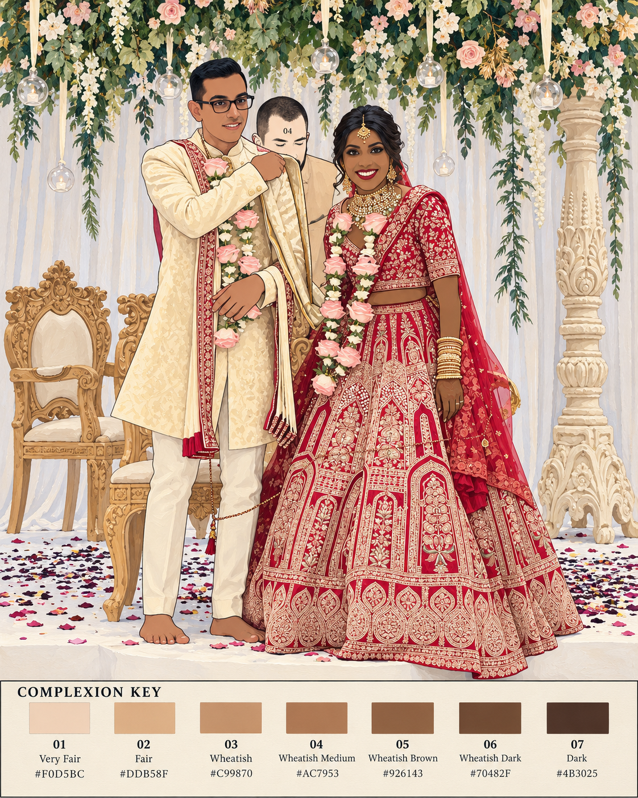

A Suitable Complexion
The commercialisation of inequality.
Why should someone have to purchase what should never have been conditional—dignity, possibility, and belonging?

A family painting study from the series · not final.
“The family picture is a record of connection. The colour chart is a record of classification. The collision between the two is the work.”
A family photograph. Seven shades. A system of judgment.
Every photograph in this series was taken at a wedding. Clothes chosen for ceremony—embroidered saris, lehengas, sherwanis, jewellery—celebrate the individuality of the people wearing them, even as matrimonial classification systems reduce those same people to complexion categories.
In A Suitable Complexion, each photograph is interrupted by the same numbered key. Every visible person's skin becomes a single flat colour—or is left unpainted with only its number exposed. The garments, their ornament, the gestures and relationships remain. The clothing celebrates an individual; the colour chart converts that individual into a number.
The labels echo documented categories in Indian matrimonial culture. The colours and procedure are the artist's invention. The exercise does not measure a person. It makes visible what classification does to a person.
How the paintings are made →Faces and relationships, interrupted by a numbered key.
Explore →02 / THE HISTORYFrom snow to glowThe history of advertising and whitening in India and beyond.
Explore →03 / THE SYSTEMIntimacy and commerceWho benefits when belonging is imagined as a purchase?
Explore →04 / THE LANGUAGEThe promise machineAdvertising slogans, aspiration and the rhetoric of success.
Explore →07 / THE CONCLUSIONBeyond the chartReturn to the people behind the numbers.
Finish the exhibition →“They wanted a color.
I came from an empire.”
The lyric addresses an imposed racial category. Here, the visual system asks a related question about the space between what can be labelled and what has been lived.
Memory, intimacy, an occasion.
A seven-shade chart borrowed from matrimonial vocabulary.
Promises of improvement and social access.
Who benefits when difference becomes deficiency?